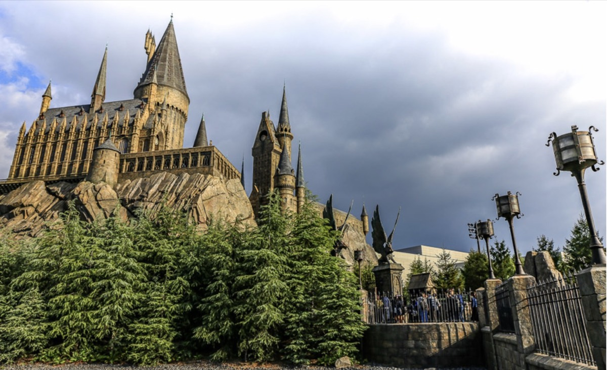
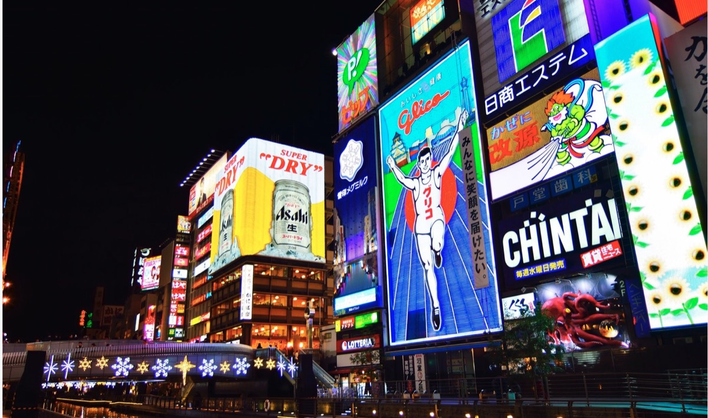
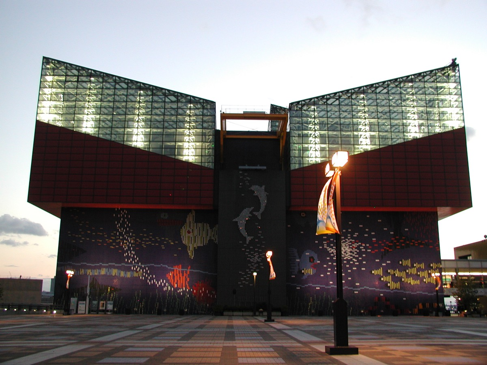
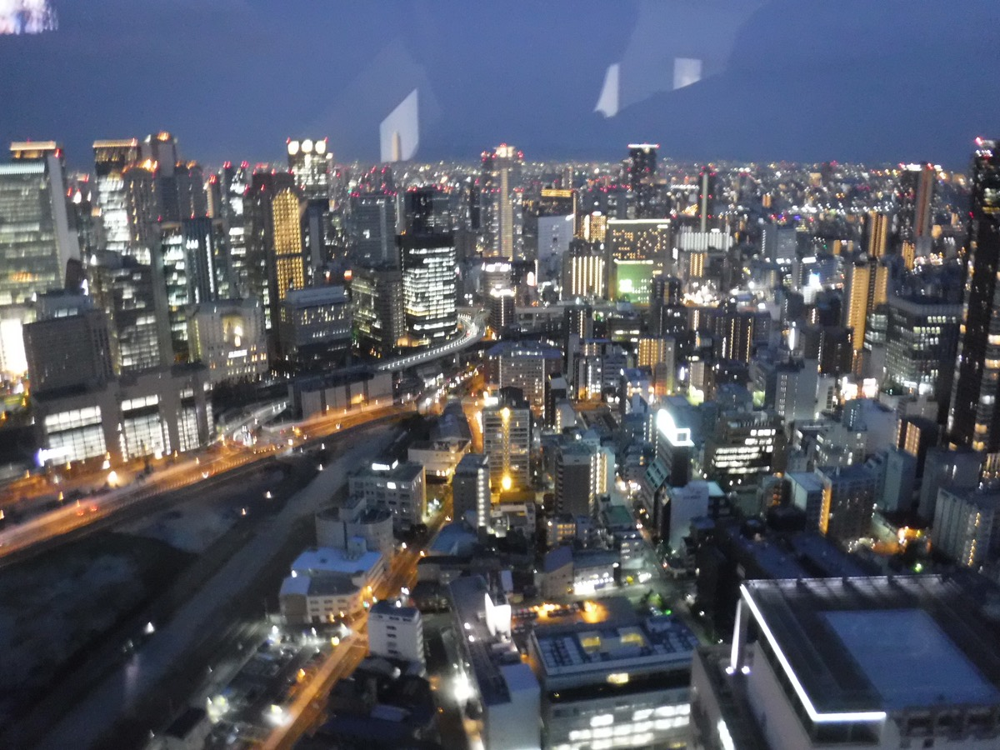
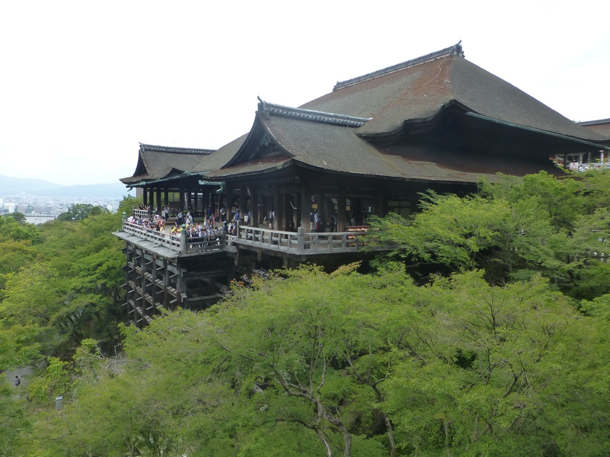
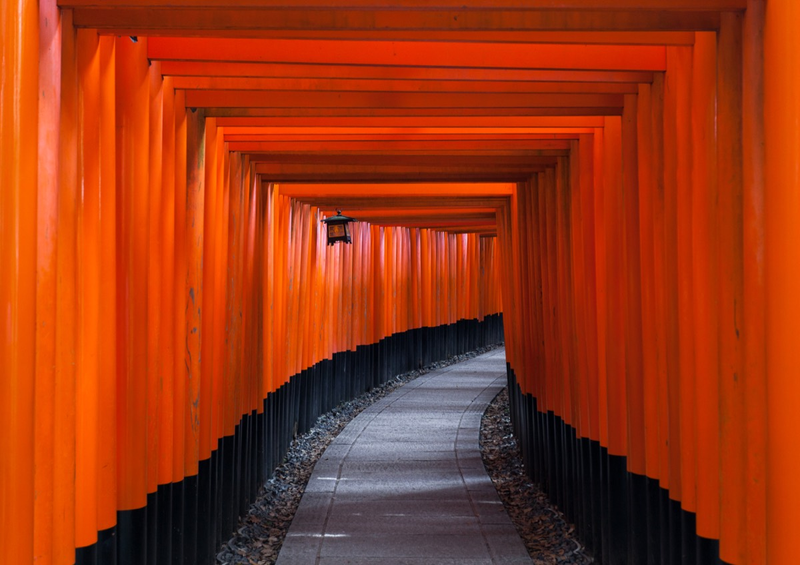
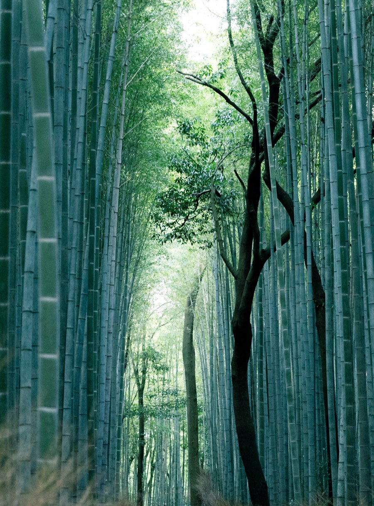
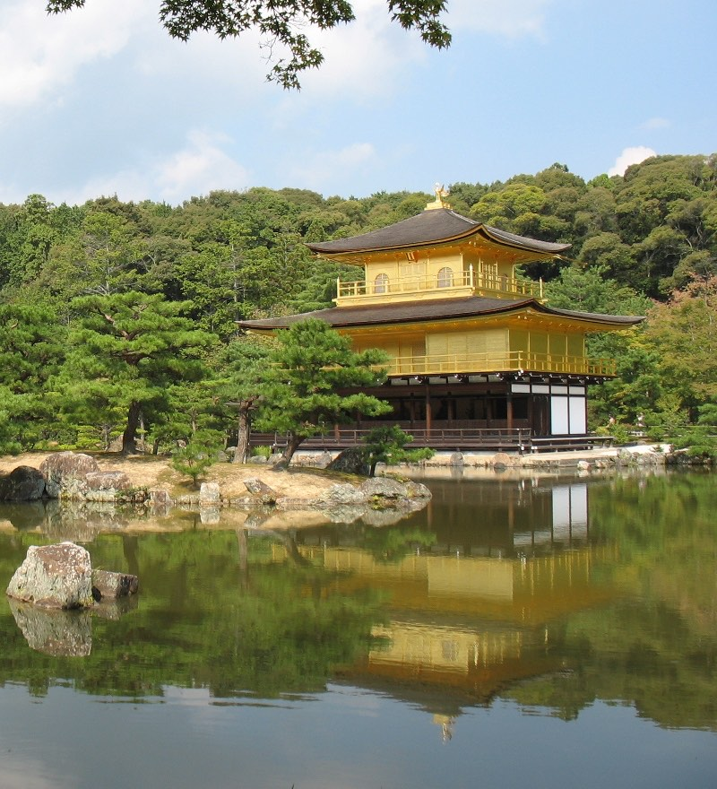
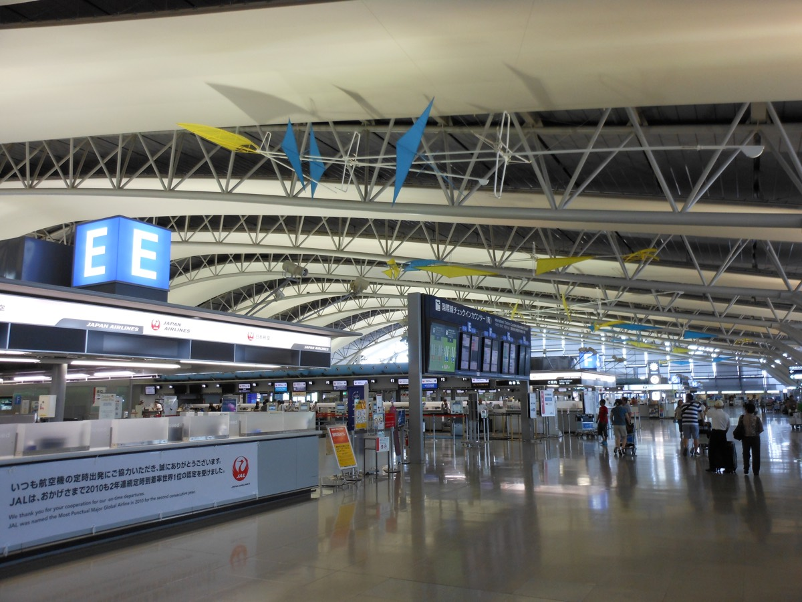

🟠 橘色 = 大阪 · 🟢 綠色 = 京都 · 灰色 = 移動/回程日 · ⏰ 黃色 = 需要搶票/注意
大阪 Osaka
7/20 – 7/24 · 5天
20
7月
週一
抵達大阪 + USJ 半天
哈利波特區
03:50 已預約 Uber，從住家出發前往桃園機場 T1（NT$796）
Tiger Air 上午 10:25 抵達關西機場 KIX T1，通關、拿行李後約中午移動往飯店
🚆 主路線：南海 Rapi:t「關西空港 → 天下茶屋」→ 轉大阪 Metro 堺筋線 2 站至「恵美須町 K18」→ 飯店（1-B 出口附近）
🎫 Rapi:t 已購票：大人2 + 兒童2，已付款 ¥4,240；領完行李後再選班次與 4 人座位，進南海專用閘門前才按 Start using
前往 ESLEAD HOTEL Osaka Nipponbashi，優先使用 lobby 自助行李寄放；正式入住 16:00 起
🚆 飯店 → USJ：恵美須町 → 日本橋 / 近鐵日本橋 → 西九条 → JR ゆめ咲線 → Universal City（約 30–40 分鐘）
14:20 起視通關與交通狀況前往 USJ，目標 15:10–15:40 入園；7/20 只逛哈利波特區，不使用 Express
7/20 是日本海之日國定假日、三連休最後一天，USJ 只當暖身日，不硬排大型設施
霍格華茲城堡拍照 · 活米村商店 · 主題餐點
定位：熟悉園區，輕鬆入場日
21
7月
週二
USJ 全天
1.5日券 + Express Pass 4 · 全員選 JAWS
攜帶 4 張完整列印的 1.5 Day Studio Pass；4 張 Express Pass 以完整票券畫面／列印件備援，不只依賴裁切截圖
07:40 出發；交通沿用 Day 1，目標 08:20–08:30 抵達 USJ 排安檢與入園
09:00 前已入園且動線順，才於 08:50–09:25 先用 Minion Express；否則直接往任天堂，Minion 留到遊行後
任天堂固定票券：區域入場 10:10–11:10，建議 09:50 到入口；咚奇剛的瘋狂礦車 Express 10:10–10:40，進區後直接前往
任天堂最多再選 Mario Kart／Yoshi 其中 1 項 → Forbidden Journey Express → JAWS Express
14:45 WaterWorld → 16:15 NO LIMIT! 遊行；時間仍以當日 USJ App、天候與官方公告為準
JAWS／Hollywood Dream 二選一已全員選 JAWS；Hollywood Dream 與侏羅紀普通排隊設施不列主行程
固定票券優先；太熱或太累時先刪第二個任天堂普通排隊設施、長拍照隊、街頭／夜間活動

22
7月
週三
白天：大阪城（天守閣登頂）
中午可回飯店休息一下
晚上：道頓堀 + 心齋橋逛街
章魚燒製作體驗：7/22 16:00-17:00，2名已預約
🍢 道頓堀くくる コナモンミュージアム（Konamon Museum） — 章魚燒名店，道頓堀經典口味
內容：每人做章魚燒15顆 + 大章魚燒2顆 + 飲料1杯 + 頭巾；現場現金付款 ¥7,700
📍 地址：〒542-0071 大阪府大阪市中央区道頓堀1-6-12 B1／📞 080-9062-3080
🚶 最近車站：南海線・大阪Metro御堂筋線「難波駅」、近鉄線・阪神線「大阪難波駅」、JR線「難波駅」（各站步行約 4–12 分鐘）
定位：大阪代表景點日

23
7月
週四
08:20 從飯店出發：恵美須町 → 堺筋本町，轉大阪 Metro 中央線 → 大阪港 C11，步行到海遊館
09:30–09:45 入館海遊館（Webket e-ticket 已購買，4張 QR code）
票券：大人2 + 兒童2，信用卡已付款 ¥8,800
午餐在天保山附近解決
下午降強度，不再加遠景點
定位：USJ 後的親子舒適日

24
7月
週五
Kids Plaza Osaka 為主景點（通常 09:30–17:00，最後入館 16:15）
下午視體力：Pokémon Center（小孩優先）或梅田逛街（大人）
很累就直接輕鬆收尾
定位：大阪最後彈性日

移動日 Osaka → Kyoto
25
7月
週六
ESLEAD HOTEL 退房，移動京都
🚕 行李主路線：計程車到 JR 大阪站 → JR 京都線新快速到京都站；比拖行李轉多次地鐵穩定
RESI STAY HEART 依入住說明寄放行李；房間尚未可進就先去清水寺
抵達京都站時，依 JR-WEST 訂位確認信領取 7/29 HARUKA 5 實體票；攜帶付款實體信用卡、訂位資料／4 位數認證碼與 4 人護照，領票後核對班次、車廂與座位
清水寺（怕公車擠可搭計程車 / Uber Taxi）
祇園散步、二寧坂一帶
定位：搬飯店日，景點不多加，輕鬆開場

京都 Kyoto
7/25 – 7/29 · 4晚 / 遊覽3天
26
7月
週日

27
7月
週一
嵯峨野小火車 + 嵐山
已購票：7/27
⚠️ 票券方向：先前往馬堀 / 龜岡端，再搭小火車「龜岡駅 → 嵯峨駅 / 嵐山駅」
08:20 從住宿出發 → 京都站搭 JR 嵯峨野線普通車到馬堀站 → 步行約 10 分鐘到トロッコ亀岡駅
嵯峨野小火車：10:30 トロッコ亀岡出發 → 10:56 トロッコ嵯峨抵達；嵯峨野4號，4人連號指定席（座位詳見離線票券）
指定席券已購買（大人2 + 兒童2，已付款 ¥2,640）；乘車 QR code 於乘車當日顯示
⚠️ 乘車 QR code 只在 7/27 當日顯示；前一晚先確認原始 E-ticket 連結可正常開啟
嵐山竹林 + 渡月橋
午餐、點心（湯豆腐 / 抹茶甜點）
猴子公園預設刪除；小火車 + 竹林 + 渡月橋後早點回京都休息
定位：京都自然景點 + 親子活動日

28
7月
週二

29
7月
週三
京都退房 → 關西機場 → 回台
⚠️ 提早出發
05:30 起床，早餐以便利商店 / 車站簡單解決
05:55 前完成退房、確認護照 / 機票 / 行李
最晚 06:00 離開 RESI STAY HEART，拖行李步行約 10–15 分鐘前往 JR 京都站「烏丸中央口」；不要走地鐵 1 號出口
約 06:10–06:15 進入 JR 京都站，依當日看板前往 HARUKA 月台
06:44 搭乘 HARUKA 5 前往 KIX T1；已購 4 人連號普通車指定席（座位詳見離線票券）
08:19 抵達關西機場站，前往 KIX T1 辦理 check-in / 托運行李
10:30 前到登機門，11:15 搭機返台
⚠️ 回程日不加任何景點；寧可早到機場，不賭交通

住宿
重要訂票提醒
票券狀態
USJ 票券已確認
1.5天票 + Express Pass 4「Minion & Hollywood Dream」已購買，4 人全選 JAWS；任天堂入場 10:10–11:10、咚奇剛 10:10–10:40。攜帶 4 張完整列印 Studio Pass，Express Pass 保留完整票券畫面／列印備援
台灣虎航去程已完成報到
IT210 去程線上 check-in 已完成，4 人電子登機證已存 Google Drive；出發前確認可離線開啟。7/20 仍須到機場櫃檯辦理行李託運。Wei 名下去、回程各有 1 件 20kg 託運額度（全家每程合計 20kg，並非每人 20kg）
嵯峨野小火車已購票
7/27 10:30 トロッコ亀岡 → 10:56 トロッコ嵯峨，嵯峨野4號、4人連號指定席；當天開啟 E-ticket 顯示乘車 QR code
南海 Rapi:t 已購票
7/20 關西機場 → 天下茶屋，大人2 + 兒童2，普通指定席，已付款 ¥4,240；抵達 KIX 領完行李後再選班次與 4 人座位，進南海專用閘門前才按 Start using
兩位大人 Mobile ICOCA 已完成
兩支手機皆已加入 ICOCA 並各加值 ¥3,000（合計 ¥6,000）；進出 JR／地鐵時各自刷自己的手機，兒童交通另依兒童票處理
海遊館 e-ticket 已購票
7/23 09:30-09:45 入館，大人2 + 兒童2，已付款 ¥8,800；每人需出示 1 個 QR code
提前預約事項
章魚燒製作體驗已預約
7/22 16:00-17:00，2名，現地現金払い ¥7,700；取消期限：7/21 17:00 前
翔翼日本 eSIM 已購買
7/20 起 10 天，KDDI 5G 高速無限，2 張，已付款 NT$1,838；台灣先安裝，抵達日本後手動切換啟用
HARUKA 5 已購票
7/29 06:44 京都 → 08:19 關西機場；大人2 + 兒童2，4人連號指定席，已付款 ¥6,600；7/25 抵達京都站時領取實體票
行李配置（Tiger Air）
托運：1件 20kg
去程配置：1 大行李箱託運，控制在 20kg 內；10kg 小包與長條拖輪包收納於大行李箱內。4 人各帶 1 個背包登機；每人最多 1 件手提行李 + 1 件個人物品，兩件合計不得超過 10kg，手提行李不得超過 54 × 38 × 23cm（含輪子與把手）
官方購票 / 預約
海遊館
已購買 7/23 09:30-09:45 入館 e-ticket（大人2 + 兒童2，已付款 ¥8,800）
當天出示附件 QR code 或 Webket マイページ票券；每人需要 1 個 QR code
嵐山小火車
已購買 7/27 龜岡駅 → 嵯峨駅 / 嵐山駅，指定席券（大人2 + 兒童2，已付款 ¥2,640）
乘車 QR code 僅於 7/27 當日顯示；到改札口開啟原始 E-ticket 連結並出示乘車 QR code
京都鐵道博物館
預算總覽 Budget
✈️ 交通
機票（4人，Tiger Air 桃園↔關西）已確認
NT$23,994
🏨 住宿
ESLEAD HOTEL 大阪（5晚，¥83,993）已付款
NT$18,479
RESI STAY HEART 京都（4晚，房費 ¥76,137 + 住宿稅 ¥3,200 = ¥79,337）房費已付／稅現場付
NT$17,454
🎢 門票 & 體驗
USJ 1.5日券（大人×2 兒童×2）已確認
NT$11,002
USJ Express Pass 4「Minion & Hollywood Dream」（4人，7/21，全員選 JAWS）已確認
NT$14,964
嵯峨野小火車（大人2 + 兒童2，¥2,640）已確認
NT$581
海遊館 e-ticket（大人2 + 兒童2，¥8,800）已確認
NT$1,936
其他景點門票（大阪城、鐵道博物館等）預估
NT$3,064
道頓堀くくる章魚燒體驗（2名，¥7,700）已確認
NT$1,694
🚇 當地交通
南海 Rapi:t 關西機場→天下茶屋（大人2 + 兒童2，¥4,240）已確認
NT$933
HARUKA 京都→KIX（大人2 + 兒童2，¥6,600）已確認
NT$1,452
其餘地鐵、JR、計程車（9天，含 7/20 Uber NT$796；Rapi:t、HARUKA 已另列）預估
NT$5,615
翔翼日本 eSIM（10天，2張）已確認
NT$1,838
🍜 餐食
餐食（4人 × 9天，¥5,000/天）預估
NT$9,900
合計（含預估）
≈ NT$112,906
匯率基準：1 JPY = 0.22 TWD ·
■ 已確認 NT$94,327 ·
■ 預估 NT$18,579
圖片來源與授權：請見 details 頁